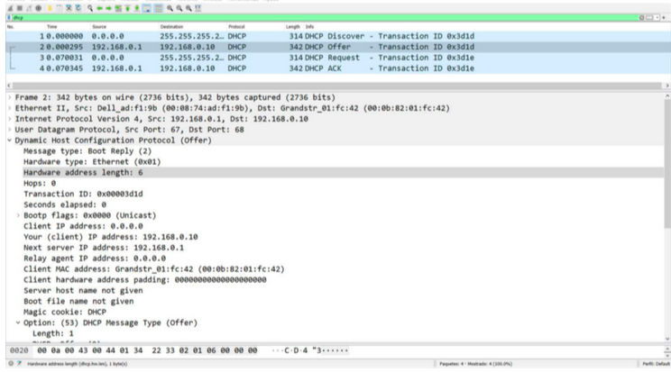
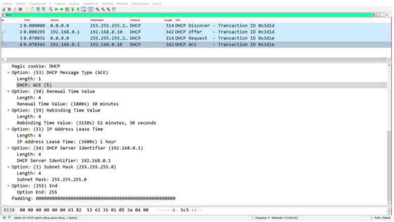
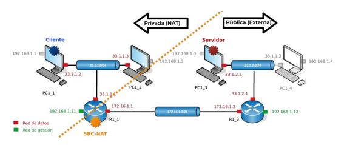
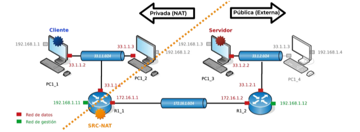

10.10.0.0/24 ¿cómo lo haría?R1_6 para gestionar remotamente PC1_1 desde otras islas usando SSH (puerto 22). ¿Qué comando usaría para conectarse desde otras islas a PC1_1 a través de la red de datos?RX_4 como servidor DHCP para asignar direcciones IP a los equipos PCX_3 y PCX_4, ¿qué subred(es) debemos añadir obligatoriamente a la lista de redes DHCP en RX_4?chain=dstnat action=dst-nat to-addresses=33.1.2.2 protocol=tcp dst-port=80

R1_6 si queremos que todos los equipos de la isla 1 puedan originar peticiones al resto de islas a través de la red de datos, pero no queremos que los equipos de otras islas puedan inferir el direccionamiento interno usado en la isla 1?SRC-NAT ...33.1.2.0/24 se le pueda asignar una dirección IP de forma dinámica, ¿qué pasos se han de seguir?chain=src-nat action=masquerade out-interface=ether1SRC-NAT, ¿cuál de las siguientes afirmaciones es correcta?
SRC-NAT, ¿cuál de las siguientes afirmaciones es correcta?
chain=dstnat action=dst-nat to-addresses=33.1.2.2 protocol=tcp dst-port=22